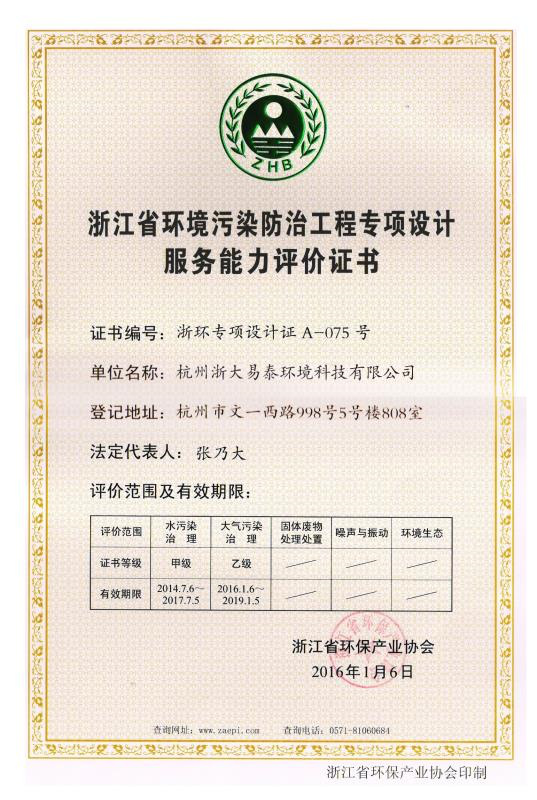
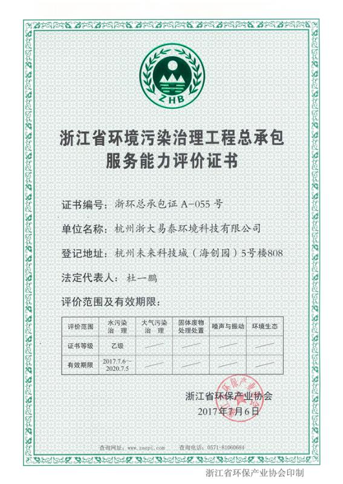

杭州浙大易泰环境科技有限公司成立于2004年，是浙江大学科技创业投资有限公司子公司、浙江大学技术推广配套单位，杭州市高新技术企业，浙江省科技型企业。
浙大易泰是浙江大学环境工程研究所的技术工程化应用推广配套单位，拥有工业污染控制技术实验室。
2006年以来，先后主持实施7项浙江省、杭州市的科技计划项目，研发出一批专利与专有技术，取得发明专利4项、实用新型专利1项、计算机软件著作权3项，公开发明专利4项，与浙江大学合作实施专利技术5项。获得浙江省环境保护科学技术二等奖1项、国家经贸委备案推广的节能减排高新技术1项、科技部科技惠民计划先进科技成果1项、2012年度环保部国家重点环境保护实用技术1项、2013年度浙江省先进适用技术1项、2014年度浙江省“五水共治”适用技术4项，2015年度国家先进水污染治理技术2项。
公司特有的非均相催化臭氧氧化技术，用于室内空气污染治理，能有效去除甲醛、苯系物，TVOC等装修污染物。拥有去除效率高，源头治理，无二次污染，操作简单，随开随用等优点。该项技术是由浙江大学官宝红教授、杭州浙大易泰环境科技有限公司联合开发，拥有自主发明专利。该技术收录《浙江环境保护先进适用技术》。

浙江省环保产业协会评定
环境污染防治工程设计能力-大气污染治理乙级
环境污染治理工程总承包服务能力-大气污染治理乙级

浙江省环保产业协会简介
成立于1992年，出版了《浙江环保产业》杂志
协会会员单位已发展至800余家，是全省从事环保事业的科研、设计、生产、流通、服务单位自愿组成，不以营利为目的的社会团体，具有社团法人资格的跨地区、跨部门、跨所有制的全行业组织。协会接受业务主管单位浙江省环境保护厅和社团登记管理机关浙江省民政厅的业务指导和监督管理。
下设室内环境控制与健康分会、社会化环境监测与运营服务专业委员会、环境监测仪器专业委员会水污染治理委员会、废气净化委员会、电除尘委员会、噪声与振动控制委员会、机动车污染防治技术专业委员会、土壤与地下水修复专业委员会、核安全与辐射安全分会等23个分支机构，分别开展各专业领域的活动。